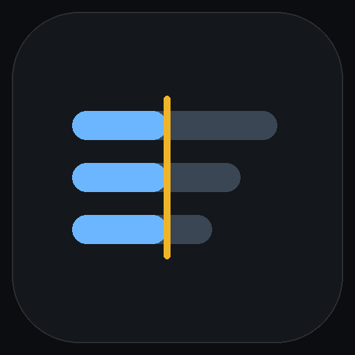

KeeperHub · The Agent Economy · September 2026
A treasury pays people every second.
This decides who keeps getting
paid when it runs short — and never holds the keys.

RunwayThe problem
A treasury pays salaries as streams. Money leaves the account every second — and there is no event, no log to index, no threshold crossing to watch.
The design decision everything rests on
Runway never holds the treasury's private key and cannot be given it. It operates through Superfluid's own access-control list — granted in one transaction, revoked in one transaction, enforced by the CFA contract rather than by Runway's code.
permissions = 6Update and delete only — deliberately not 7. The contract reverts a createFlow
from this operator. It can throttle or close a stream; it can never open one to an address
of its own choosing.
Set to the sum of the committed rates. It can restore what was agreed and cannot exceed it.
The treasury calls the same function with permissions = 0. Runway's
cooperation is not required, and that is the point.
What one tick does
Balance, deposit, and every stream's live rate, off the chain. If any read fails, the tick fails — it never decides on partial facts.
A pure function of those facts and a policy the treasury owns. Shed discretionary first, then standard, then critical — each stopping at its floor.
One superfluid/update-flow per adjusted stream through KeeperHub, every
parameter literal, each carrying an idempotency key derived from the work rather than
from the attempt.
Read every adjusted stream back. A mined receipt proves a transaction landed; only a read proves the stream changed rate.
On an incomplete read, a rejected mandate, an unknown write outcome, or a budget the floors cannot meet. Silence is never the answer to a case the policy does not cover.
It has actually run · Ethereum Sepolia, 8 September 2026
| Stream | Rate before | Rate after | Outcome |
|---|---|---|---|
| Discretionary | 57 860 765 330 | 11 572 153 066 | read back at its floor |
| Standard | 86 791 147 994 | 21 697 786 998 | read back at its floor |
| Critical | 144 651 913 324 | 86 791 147 994 | read back at its floor |
Wei per second, so the numbers are exact rather than rounded. All three landed
and all three rates were read back off the chain. The floors still could not close
79 664 745 201 wei/sec, so a floors-exceed-budget escalation was
raised for the remainder — the agent stopped at the floors instead of choosing who to cut.
Why you can believe those numbers
pnpm test:evidence reads every hash, link, block number and rate
back out of the captured run record, and fails if the document disagrees.
What it refuses to do
Built on
The run is recorded as JSON and rendered to a self-contained HTML report — no scripts, no remote resources, everything escaped. The record is the product as much as the decision is.